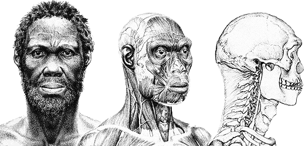

Prehistory
It was not until 1963 that evidence of the presence of ancient hominids was discovered in Ethiopia, many years after similar discoveries had been made in neighbouring Kenya and Tanzania. The discovery was made by Gerrard Dekker, a Dutch hydrologist, who found Acheulian stone tools that were over a million years old at the Kella site, near Awash. Since then many important finds have propelled Ethiopia to the forefront of palaeontology. The oldest hominid discovered to date in Ethiopia is the 4.2 million year old Ardipithicus ramidus (Ardi) found by Tim D. White in 1994. The most well known hominid discovery is Lucy, found in the Awash Valley of Afar Region in 1974 by Donald Johanson, and is one of the most complete and best preserved, adult Australopithecine fossils ever uncovered. Lucy's taxonomic name, Australopithecus afarensis, means 'southern ape of Afar', and refers to the Ethiopian region where the discovery was made. Lucy is estimated to have lived 3.2 million years ago.
There have been many other notable fossil findings in the country. In Gona stone tools were uncovered in 1992 that were 2.52 million years old, the oldest such tools discovered anywhere in the world. In 2010 fossilised animal bones, that were 3.4 million years old, were found with stone-tool-inflicted marks on them in the Lower Awash Valley by an international team, led by Shannon McPherron, which is the oldest evidence of stone tool use ever found anywhere in the world. In 2004 fossils found near the Omo river at Kibbish by Richard Leakey in 1967 were redated to 195,000 years old, the oldest date in East Africa for modern Homo sapiens. Homo sapiens idaltu, found in the Middle Awash in Ethiopia in 1997, lived about 160,000 years ago.
Some of the earliest known evidence of early stone-tipped projectile weapons (a characteristic tool of Homo sapiens), the stone tips of javelins or throwing spears, were discovered in 2013 at the site of Gademotta, and date to around 279,000 years ago. In 2019, further evidence of Middle Stone Age complex projectile weapons was found at Aduma, also in Ethiopia, dated 100,000-80,000 years ago, in the form of points considered likely to belong to darts delivered by spear throwers.
Land of Punt
Punt was a kingdom recently found to encompass the Horn of Africa by the archaeological findings of Egyptian mummified baboons in modern-day Ethiopia. and caves in Somaliland dating back to around the time of Punt. Egyptian traders from about 3000 BC refer to lands south of Nubia or Kush as Punt and Yam. The Ancient Egyptians were in possession of myrrh (found in Punt), which Richard Pankhurst interprets to indicate trade between the two countries was extant from Ancient Egypt's beginnings. Pharaonic records indicate this possession of myrrh as early as the First and Second dynasties (3100–2888 BC), which was also a prized product of the Horn of Africa Region; inscriptions and pictorial reliefs also indicate ivory, panther and other animal skins, myrrh-trees and ostrich feathers from the African coastal belt; and in the Fourth Egyptian Dynasty (2789–2767 BC) a Puntite is mentioned to be in the service of the son of Cheops, the builder of the Great Pyramid. J. H. Breasted posited that this early trade relationship could have been realized through overland trade down the Nile and its tributaries (i.e. the Blue Nile and Atbara). The Greek historian and geographer Agatharchides had documented seafaring among the early Egyptians: "During the prosperous period of the Old Kingdom, between the 30th and 25th centuries B. C., the river-routes were kept in order, and Egyptian ships sailed the Red Sea as far as the myrrh-country."
The first known voyage to Punt occurred in the 25th century BC under the reign of Pharaoh Sahure. The most famous expedition to Punt, however, comes during the reign of Queen Hatshepsut probably around 1495 BC, as the expedition was recorded in detailed reliefs on the temple of Deir el-Bahri at Thebes. The inscriptions depict a trading group bringing back myrrh trees, sacks of myrrh, elephant tusks, incense, gold, various fragmented wood, and exotic animals. Detailed information about these two nations is sparse, and there are many theories concerning their locations and the ethnic relationship of their peoples. The Egyptians sometimes called the Land of Punt, "God's-Land", due to the "large quantities of gold, ivory, and myrrh that could be easily obtained".[17]
Evidence of Naqadan contacts include obsidian from Ethiopia and the Aegean. Though not much is known, it is highly likely that Punt fell due to ethnic tensions between Somali and Ethiopians, splitting to form 2 different kingdoms, Macrobia and D'mt at around the 1st millennium BC.[18]